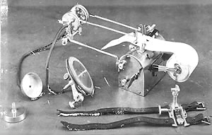

Sir James Mackenzie(1853-1925), schottischer Kardiologe, entwickelte ein Gerät namens "Ink-Polygraph", welches bestimmte physiologische Vorgänge erkennen und aufzeichnen konnte, wie z.B. Puls und Blutdruck. Aus diesen Forschungen entwickelte John Larson, ein kalifornischer Medizinstudent, 1921 den modernen "Lügendetektor"(Polygraph). Seward Babbitt, USA, baut einen Kran mit Greifvorrichtung, um Barren aus einem Schmelzofen herauszuheben.